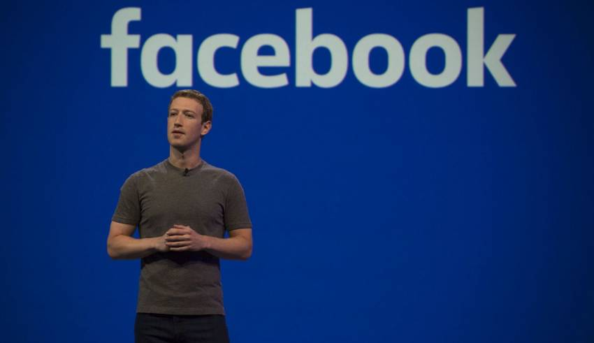

Mark Zuckerberg apologises to Congress over massive Facebook breach
WASHINGTON: Facebook chief Mark Zuckerberg apologised to US lawmakers Tuesday for the leak of personal data on tens of millions of users as he faced a day of reckoning before a Congress mulling regulation of the global social media giant.
In his first-ever US congressional appearance, the Facebook founder and chief executive sought to quell the storm over privacy and security lapses at the social network that have angered lawmakers and Facebook's two billion users.

Swappping his customary tee-shirt for a business suit and tie, Zuckerberg faced tough questions over how a US-British political research firm, Cambridge Analytica, plundered detailed personal data on 87 million users to be used in the 2016 US presidential election.
Facebook also became the platform of choice for a stunning Russian campaign of online misinformation that US intelligence says was designed to tilt the 2016 vote toward Donald Trump.
"It was my mistake, and I'm sorry ..
Lawmakers questioned whether the election meddling and poor controls on personal data requires the government to step in to regulate Facebook and other social media companies which generate revenue from user data.
"The tech industry has an obligation to respond to widespread and growing concerns over data privacy and security and to restore the public trust. The status quo no longer works," said Senator Chuck Grassley, chair of one of the committees holding the hearing.
Mark Zuckerberg is testifying at a joint hearing of the Senate Judiciary and Commerce committees Tuesday.
It's the first of two congressional hearings for the Facebook founder and CEO.
Zuckerberg is likely to face tough questions on user privacy, foreign meddling on the site and abuse of social media tools.
Mark Zuckerberg testified Facebook did not notify the Federal Trade Commission about the Cambridge Analytica data leak years ago because the social media giant "considered it a closed case."
The Facebook founder and CEO spoke at a joint hearing of the Senate Judiciary and Commerce committees Tuesday, the first of two congressional hearings for him this week.
Watch the full video of Zuckerberg's testimony here.
The company is facing questions following reports that research firm Cambridge Analytica improperly gained access to the personal data of as many as 87 million Facebook users.
Facebook has said it first learned of the leak in 2015 and demanded Cambridge Analytica delete the data then. Executives have since said it was a mistake to trust that the research firm had done so.
"We considered it a closed case. In retrospect that was clearly a mistake. We shouldn't have taken their word for it," Zuckerberg said Tuesday.
Facebook did not notify the FTC — which signed a consent decree with the tech company in 2011 requiring that Facebook notify users if their personal data is shared beyond their specified privacy settings — Zuckerberg said, "for the same reason."
"We considered it a closed case," he said, adding that he would act differently were he to face that decision again.
The FTC last month said it was investigating whether Facebook had violated the 2011 decree — a rare confirmation of an ongoing probe.
During Tuesday's hearing, Zuckerberg said he was not sure exactly how long it took Facebook to delete personal information after a user deletes their account. On Facebook's help page, it says it could take 90 days from the beginning of the deletion process to delete every post. The FTC decree said that Facebook should "prevent anyone from accessing a user's material more than 30 days after the user has deleted his or her account."
Zuckerberg is likely to face more tough questions during his week on Capitol Hill on user privacy, foreign meddling on the site and abuse of social media tools.
The CEO said during Tuesday's hearing that "there will always be a version of Facebook that is free," clarifying recent comments by the company's chief operating officer, Sheryl Sandberg, that an ad-free version of Facebook would have to be a paid product. But he maintained that Facebook users own their own data.
"The first line of our Terms of Service say that you control and own the information and content that you put on Facebook," Zuckerberg said Tuesday.
He also expressed confidence that Facebook would better tamp down meddling in 2018 elections.
Facebook is cooperating with special counsel Robert Mueller while he investigates Russian meddling in the 2016 presidential election and possible Trump campaign cooperation with Moscow, Zuckerberg said. President Donald Trump has repeatedly denied collusion.
Zuckerberg's scheduled to testify before the House Energy and Commerce Committee on Wednesday. His prepared remarks for that hearing were released Monday.
Facebook stock surged more than 4 percent Tuesday during Zuckerberg's comments.
Ads

We can add 'ads' over here..
putting the ads in the side bar gives max
chance of clicking on ad.
 India launches another navigation satellite as part of home grown GPS
India launches another navigation satellite as part of home grown GPS Mumbai: City can become smart only when roads are pothole-free, says HC
Mumbai: City can become smart only when roads are pothole-free, says HC Modi rejects allegations over 15th Finance Commission
Modi rejects allegations over 15th Finance Commission